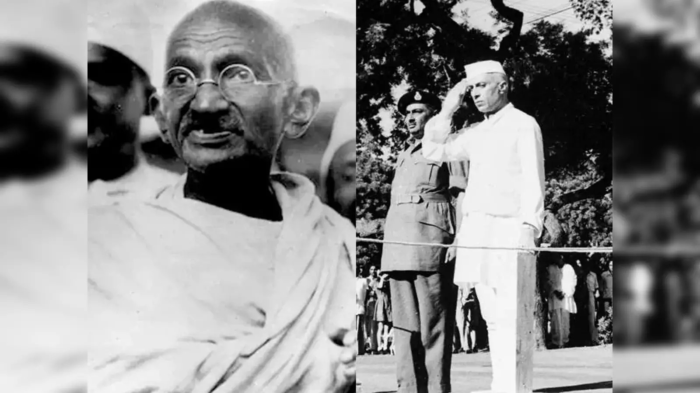

Mahatma Gandhi's ambition
leading India to independence.
By: Priansh Mittra
August 15, 1947

Today, it is a historic moment in
the Durbar Hall in New
Delhi, witnessing the birth
of a new nation and listening to Jawaharlal Nehru, India's first Prime Minister,
proclaim, "I am proud to announce that India is now a free country. We have fought
for this day for many years, and now, we have finally achieved it. We have finally
achieved our freedom."
This story of triumph for India's
independence can only be written with the
unwavering commitment and ambition of Mahatma Gandhi, who led the powerful
nonviolent movement for the end of Britain's imperialistic rule.
It is a
momentous occasion to reflect on the power of noble ambitions leading to positive
change in the lives of millions of people in the nation and acknowledging that
misguided ambition when used for personal gains can lead to devastating results as
seen in World Wars leading to massive destruction and loss of lives.
The ambitions of world leaders
during the past many decades have been fueled by
imperialistic desires, economic gains, and a thirst for power. In significant
literary works like All Is Quiet On the Western Front,
through the eyes of soldiers, we witness the futility and brutality of war when
fueled by unchecked ambition from
world leaders. The haunting experiences of war compel us to question the motives
that drive our ambitions. Are our pursuits driven solely by self-interest and
personal gain, or do they encompass the well-being of others and the pursuit of a
more equitable world?
In a world driven by materialistic
ambitions, Gandhi's life is rooted in simplicity
and self-sacrifice. Just like the characters in The Great
Gatsby, Gandhi's life was
filled with challenges and setbacks, but unlike Gatsby, his pursuit of material
greatness and glory and ultimate tragic downfall, Gandhi rejected the trappings of
wealth and power and his ambition rooted in empathy, equality and pursuit of just
society propelled India towards hard-fought independence.
Gandhi's ambition for
collective human upliftment is in stark contrast to the materialistic ambition
fueling the capitalist and imperialist culture spreading through many nations across
the world.
The shadow of the Industrial
Revolution has loomed large over
India's struggle for independence against the oppressive British rule which resulted
in poverty, social inequality, and blatant disregard of human rights. This is in
contrast to Gandhi's vision of social justice and equality. It is a cautionary tale
and a reminder that ambition for progress must be accompanied by responsibility and
the need for ethical considerations and recognition of human welfare amidst the
pursuit of progress.
On the birth of this Indian
independence, as we reflect on the lessons in history,
Mahatma Gandhi's ambition emerges as a guiding light for transformative change. His
ambition for peaceful revolution and collective good is an inspiration to create a
compassionate and just society for all. Mahatma Gandhi's life serves as an example
of the transformative power of ambition and a reminder that noble ambitions can lead
to positive changes and inspire generations to come, a reminder of potential within
each of us to choose a path guided by empathy, humility, and a steadfast commitment
to the greater good.